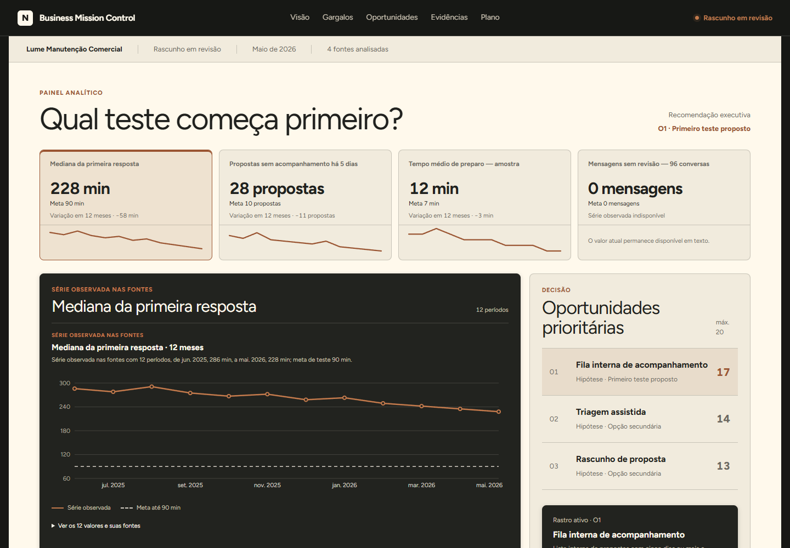
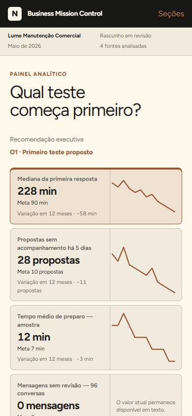

O que preciso conferir antes de publicar?
A auditoria começa em uma nova conversa, lê a versão candidata como evidência e testa critérios sem herdar a confiança de quem construiu.
Resultado: referência visual disponível, checklist aplicado, diferenças registradas e veredito explícito.
Entrada da atividade
Tenha a referência antes de comparar.
O objetivo é reproduzir a apresentação do painel BMC: composição, tipografia, cores, espaçamentos e estados. O conteúdo continua sendo a análise revisada no seu projeto.
Pacote visual do BMC
Contém design, estilos, componentes, fonte Figtree local, capturas de desktop e celular, critérios e modelo de registro.
Baixar pacote visualLer guia do pacote- Coloque os arquivos no projeto. Descompacte o pacote e coloque
referencias-visuais/ao lado doHANDOFF.mdda Lume. Se já recebeu a pasta, confira o guia e acrescente os arquivos ausentes; preserve o trabalho existente. - Confira o acesso. O Codex precisa ler
referencias-visuais/bmc-original/e a candidata indicada no handoff. Em uma conversa sem acesso local, forneça os arquivos. Um caminho escrito na mensagem não anexa o conteúdo. - Confira as entradas. Guia, critérios, capturas, design, estilos e fonte devem estar disponíveis. Se faltar algum, recupere pelo pacote antes de pedir a auditoria.




As imagens mostram os componentes originais renderizados com dados sintéticos de apresentação. Elas orientam a comparação visual e não comprovam login, geração, aprovação ou publicação do seu Site.
Nova conversa
Separe autoria de verificação.
Abra M7 · Validação e publicação. Envie uma mensagem com o pedido abaixo, depois de conferir as entradas. Ele lê handoff, candidata e pacote visual; salva os registros da auditoria. Se você já abriu esta conversa, continue nela.
Leia primeiro o HANDOFF.md na raiz do projeto da Lume, os critérios de aceite e os caminhos da versão candidata indicados nele. Leia também referencias-visuais/bmc-original/GUIA-DO-ALUNO.md e CRITERIOS-VISUAIS.md, nessa mesma pasta. Confira se o pacote, as capturas de referência e a candidata estão acessíveis. Se faltar uma entrada, identifique o arquivo e pare para recuperá-lo; não invente a referência. Faça uma auditoria independente da candidata atual. Verifique dados sintéticos, fatos, fontes, recortes, rótulos, limites humanos, links, controles, filtros, estados, teclado, foco, contraste, leitura sem JavaScript, movimento reduzido, celular, impressão e política de acesso pretendida. Compare a apresentação com o BMC fornecido: composição, Figtree carregada, cores, largura, espaçamentos, hierarquia, indicadores, fila, matriz, dossiê, fontes e plano. Use os critérios do pacote e registre versão, tamanho da janela, estado e capturas lado a lado. Textos e quantidades seguem o conteúdo revisado da Lume; diferenças de conteúdo não autorizam alterar a análise. As imagens fornecidas são referências de apresentação, não prova de uma geração ou aprovação do seu Site. Registre em validacao/relatorio-m7.md cada condição observada, evidência, impacto, severidade e correção proposta. Copie o modelo REGISTRO-VISUAL.md do pacote para validacao/registro-visual.md apenas se o registro ainda não existir; preserve registros anteriores. Preencha somente observações verificadas. Fidelidade visual sem comparação ou com desvio não resolvido permanece pendente. Não transforme teste indisponível em aprovação. Emita um veredito: “não pronto”, “pronto com ressalvas” ou “pronto para decisão de publicação”. Um desvio do visual acordado impede concluir esse critério; uma diferença de conteúdo autorizada deve ser identificada. Nesta etapa, não corrija, não publique, não compartilhe e não mude acesso. Salve apenas os registros da auditoria e pare para minha revisão.
Você também pode selecionar e copiar o texto manualmente.
Anatomia de achado
Um problema precisa ser reproduzível.
“Está confuso” não orienta correção. Um achado útil aponta onde, como observar, por que importa e o que precisa mudar sem ampliar escopo.
Checklist aplicado
Bloqueador aberto impede publicação.
Marque somente o que você verificou. Os bloqueadores e os critérios obrigatórios precisam estar resolvidos. Uma diferença visual pode não ser um risco de segurança, mas impede concluir o visual acordado. Sem comparação, marque “não verificado”.
Conteúdo e dados
Fidelidade visual
Uso e acesso
Regra manual do veredito
Não pronto: existe bloqueador ou critério obrigatório aberto, inclusive fidelidade visual não verificada. Pronto com ressalvas: bloqueadores estão fechados, mas uma limitação não bloqueante precisa acompanhar a entrega. Pronto para decisão de publicação: verificações estão completas; a autorização humana para publicar ainda é separada.
O Codex registra os resultados em validacao/relatorio-m7.md e validacao/registro-visual.md. Compare o relatório com o que você observou; as caixas desta página não verificam o Site automaticamente.
Guarde o achado junto do relatório.